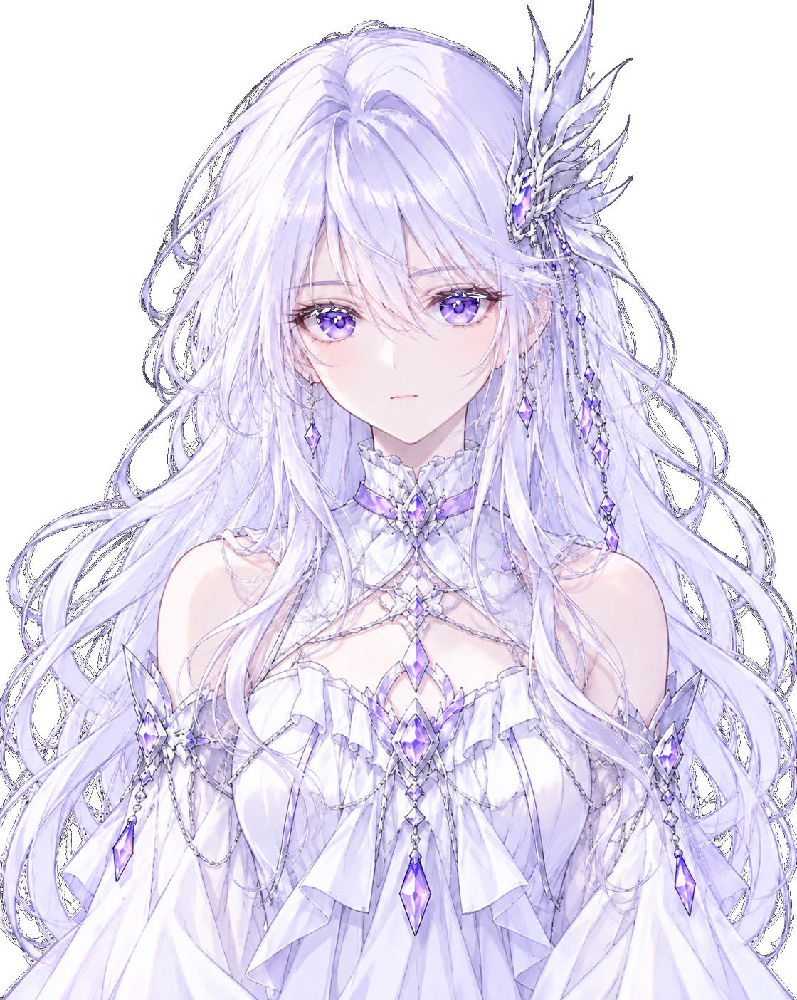

Android
官网公开版 6.1.0Android 7.0 及以上 · 约 59.5 MB
下载 Android APK
每一次相遇，都留下回响。
VIRTUGENE · DIGITAL LIFE01 / 相处的更多可能
从一句日常，到听见回应，再到一起走过的故事。
7.0.0 Android 实际组件截图。账号、对话与场景为展示示例，语音展示不含音频。
02 / 不止停在上一句
偏好、约定，还有一起经历的小事。关系不必每次从头开始，记忆也应该由你掌握。
03 / 生活与故事，都有位置
生活助理把今日、对话与待处理放在一起。日记、朋友圈、待办与星域，各有一个清楚的入口。
04 / 把细节看清楚
7.0.0 深色界面 · 点击查看大图
把相处，留在日常
选择一个角色，配置自己的模型服务。
余下的时间，留给你们慢慢认识。
本页展示 7.0.0 本地体验，尚未公开发布。下方提供现有官网公开安装包。
Android 7.0 及以上 · 约 59.5 MB
下载 Android APKWindows 10 及以上 · 约 81 MB
下载 Windows 安装程序AI 功能需要你自己的模型服务和 API Key，语音需单独配置相应服务，费用由服务提供方计收。使用时，必要的对话与所选资料会发送至你配置的服务。
当前展示来自本地 7.0.0 界面。公开发行以项目的发行记录为准，下方下载入口为现有官网公开版本。
使用相同签名的新版安装包可以覆盖安装。升级前请在应用内备份需要保留的资料，避免先卸载旧版。
可以查看已有记忆、可用来源与原话，手动补充或删除。AI 可能产生不准确的信息，重要事实请核对。
需要配置适用的识别与语音合成服务，并在主动使用时授予麦克风权限。本页的通话展示是无声界面示例。